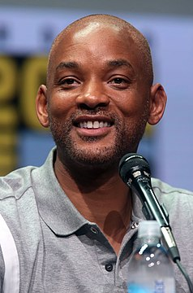

Вілл Сміт
Матеріал з Вікіпедії — вільної енциклопедії.
9 змін у цій версії очікують на перевірку. Стабільну версію було перевірено 11 грудня 2020.
Ві́ллард Крі́стофер (Вілл) Сміт молодший (англ. Willard Christopher 'Will' Smith, jr.; нар. 25 вересня 1968, Філадельфія, Пенсильванія) — американський актор, співак у стилі хіп-хоп (лауреат American Music Awards 1999). Дворазовий номінант на премію «Оскар» (2002, 2007), п'ятиразовий – на премію «Золотий глобус» (1993, 1994, 2002, 2007, 2016).
За підсумками 2019 року перебуває на 8-му місці рейтингу Forbes[6] серед найбільш високооплачуваних акторів; його заробіток склав $44,5 млн (69-е місце в загальному рейтингу знаменитостей).[7]
Народився у Філадельфії, штат Пенсильванія, був другим з чотирьох дітей у сім'ї. Батько, Віллард Крістофер Сміт старший працював спеціалістом з холодильного устаткування, мав власне мале підприємство; матір Каролін (Брайт) була шкільним адміністратором. За власним визнанням Вілла, сім'я належала до середнього класу і діти мали можливості для навчання і безпечного дитинства. Коли Віллу виповнилося 13 років, його батьки розійшлися, у школі він навчався посередньо, але завдяки приємній зовнішності та почуттю гумору зажив поваги вчителів та шкільних товаришів. Саме в школі він уперше отримав прізвисько Принц,
Ще в підлітковому віці Вілл цікавився музикою, зокрема репом. Разом зі своїм другом Джефом Таунзом (Ді-Джей Джеззі Джефф) та пізніше з Клеренсом Холмсом вони створили власний гурт Ді-Джей Джеззі Джефф & Свіжий Принц (англ. DJ Jazzy Jeff & The Fresh Prince). Гурт користувався неабиякою популярністю серед підлітків, виконував гумористичні скетчі у стилі реп і 1988 року навіть виграв приз Ґреммі. Вілл Сміт був настільки успішним у гурті, що по закінченні школи навіть відмовився від стипендії в коледжі. Популярність Сміта серед молоді привернула увагу продюсерів з телекомпанії Ен-Бі-Сі і 1990 року йому запропонували контракт у ситкомі «Свіжий Принц із Бел-Ейр» (англ. The Fresh Prince of Bel-Air).
У ситкомі «Свіжий Принц із Бел-Ейр» Вілл Сміт грав роль підлітка схожого на самого себе під своїм сценічним ім'ям — Свіжий Принц. Телесеріал, значною мірою завдяки комічному таланту Сміта, користувався великою популярністю американської аудиторії і вважається початком його акторської кар'єри. Коли ситком закрили 1996 року Вілл Сміт продовжив співати реп вже як сольний виконавець. Завдяки популярності в попередньому телесеріалі, того ж року його запросили на роль у фільмі «День незалежності» (англ. Independence Day), де він зіграв драматичну роль пілота винищувача у боротьбі проти інопланетних інтервентів. Ця стрічка стала блокбастером і закріпила за ним репутацію не тільки як комічного, але як і драматичного актора.
Наступною відомою роллю стала роль Агента Джей у комічному фільмі «Люди у чорному» (англ. Men in Black). Цей фільм став одним зі найпопулярніших у США й у всьому світі; Вілл Сміт зіграв і у сиквелі цього фільму, а також у декількох інших дуже популярних фільмах, таких як «Ворог держави», «Дикий, дикий Захід» (Фільм із тріском провалився, проте звукова доріжка до нього знову очолила американські чарти), «Я робот», «Я легенда».
В кінці 1990-х Вілл Сміт відмовився від головної ролі в «Матриці». У 2002—2003 знявся в сиквелах «Люди в чорному 2» і «Погані хлопці 2». Також брав участь в озвучуванні мультфільму «Підводна братва». А в 2005 на екрани вийшла комедія «Метод Хітча», що оповідає про хитрого і спритного доктора-свата, який може змусити будь-яку жінку в тебе закохатися.
Найбільшого визнання Вілл Сміт здобув за роль Мухаммеда Алі у фільмі «Алі» (2001). За роль у цьому фільмі його було номіновано на Оскара, але він не отримав підтримку журі. Іншою роллю, яка заслужила йому номінацію була роль Кріса Ґарднера у фільмі «У гонитві за щастям», але він знову не отримав нагороду. Завдяки цим ролям та участі у відомих блокбастерах він набув слави зірки міжнародного масштабу і є одним з високооплачуваних акторів Голлівуду.
Уперше Вілл Сміт одружився 1992 року з акторкою Шері Зампіно. 1992 року в них народився син Віллард Керрол Сміт ІІІ, більше відомий як Трей. Три роки потому шлюб розпався, але вже 1997 року він одружився з актрисою Джадою Пінкетт, з якою в них народилися син Джейден Крістофер Саєр Сміт та дочка Віллоу Камілл Рейн Сміт. У декількох фільмах Вілл з'являвся разом зі своїми дітьми, зокрема з Джейденом «У гонитві за щастям», «Після нашої ери» та з Віллоу «Я легенда». За рейтингом журналу Fortune, Вілл Сміт є одним з 40 найбагатших молодих людей Америки. Сім'я мешкає у приватному маєтку у Флориді, а також Лос-Анджелесі та Філадельфії.
| англ. Will Smith | |
|---|---|
|  | |
| Ім'я при народженні | Віллард Керрол Сміт молодший |
| Інші імена | The Fresh Prince і Fresh Prince |
| Народився |
25 вересня 1968[1][2][…] (52 роки) Філадельфія, Пенсильванія[4] |
| Національність | афроамериканець |
| Релігія | християнство |
| Діяльність |
актор, співак, кінопродюсер |
| Alma mater | Overbrook High Schoold, Archbishop John Carroll High Schoold і Julia R. Masterman Schoold |
| Роки діяльності | з 1986 — тепер. час |
| Дружина | Джада Пінкетт-Сміт |
| IMDb | nm0000226 |
| Автограф |

|
| Нагороди та премії | |
| MTV Movie Award for Best Fightd | |
| MTV Movie Award for Best Kissd | |
| Кінонагорода MTV за найкраще виконання | |
| Saturn Award for the Best Actord | |
| Favorite Soul/R&B Albumd | |
| Favorite Pop/Rock Albumd | |
| Favorite Pop/Rock Male Artistd | |
| Grammy Award for Best Rap Performanced | |
| Grammy Award for Best Rap Solo Performanced | |
| MTV Video Music Award for Best Rap Videod | |
| World Music Awards | |
| Golden Raspberry Award for Worst Original Songd | |
| Golden Raspberry Award for Worst Supporting Actord | |
| Молодий актор | |